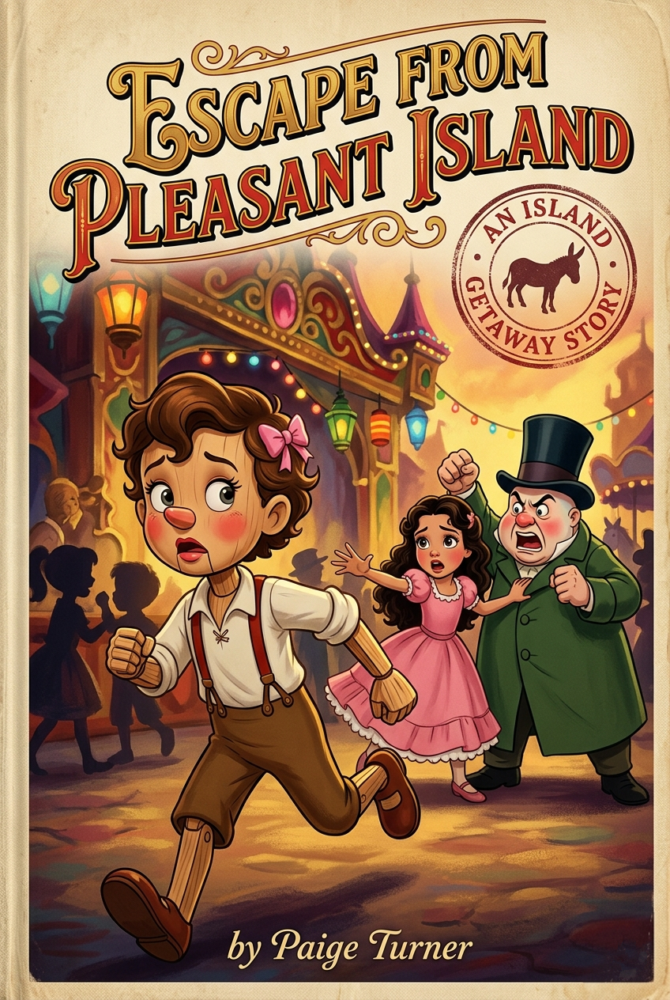
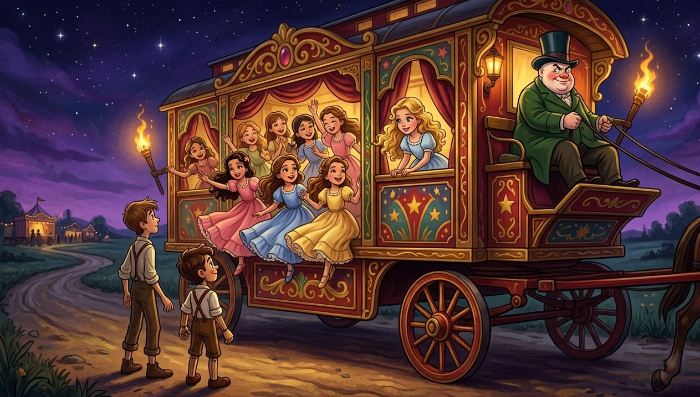
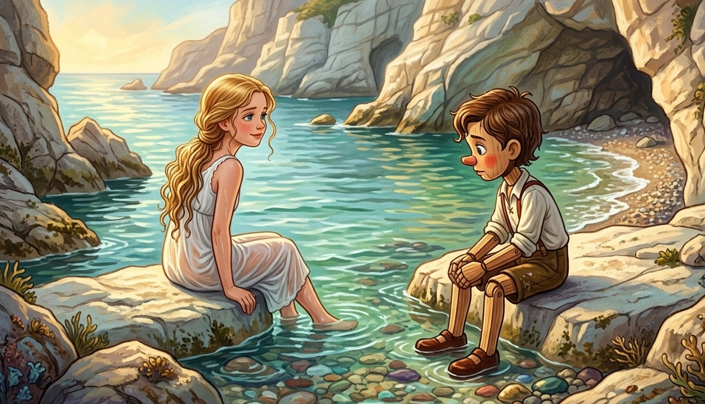
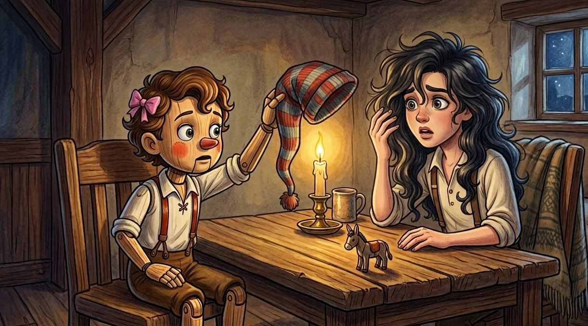
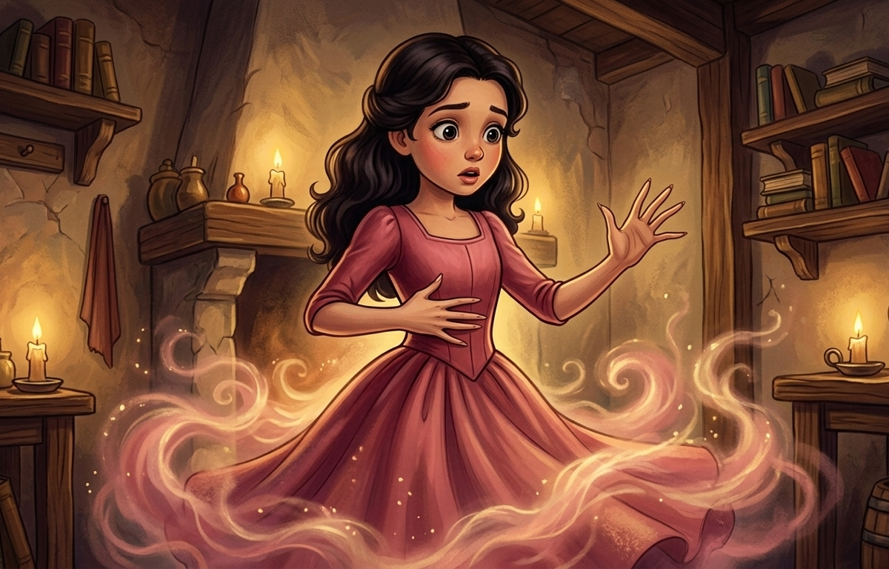
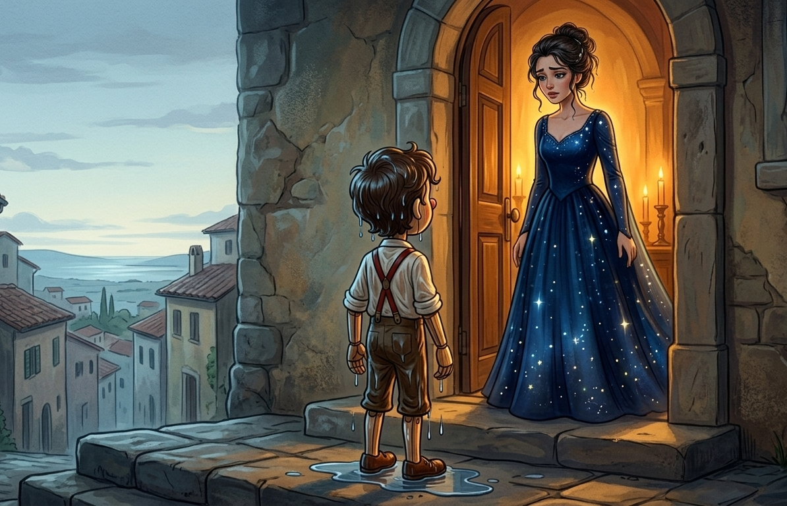

{kind=link}

The Fairy had been very clear about it, which was wise of her, because Pinocchio required clarity the way a leaking boat requires bailing: constantly, and with no guarantee it would help.
"Back before dark Pinocchio," she said, smoothing his collar with two fingers, "Tomorrow you become a real boy."
She said it the way she had always said it, warmly, certainly, as though it were the most natural conclusion to everything that had come before. As though it were simply what happened to good puppets who tried hard enough and came home when they were told and didn't run away more than a certain number of times.
She had been saying it, in one form or another, for as long as Pinocchio could remember. Every time he failed she withdrew it. Every time he came back she offered it again. It was the light she kept in the window. It was the reason to be good. It was the only destination she had ever shown him, and she showed it to him the way you show a very particular road to someone who has been lost: here, this one, this is the right one, this is where you should always have been going.
"Tonight you invite your friends to celebrate, and then you come home," she continued.
"I shall be back in an hour," Pinocchio said.
The Fairy knew Pinocchio. She did not dignify this with a response. She simply looked at him with eyes that had seen everything he'd ever done and forgiven most of it, and said, "Back before dark. And don't find Lamp-Wick."
Pinocchio kissed her hand and went dancing out into the afternoon, already thinking about Lamp-Wick.
Now, a word about Lamp-Wick.
His real name was Romeo, which had suited him about as well as a silk hat suits a goat. He was long and thin and had been known since childhood for making trouble look easy. No, not merely easy. Natural, inevitable, as though the world arranged itself into trouble specifically to give Romeo somewhere to be. Someone had started calling him Lamp-Wick when he was small, after the thin oil-soaked threads that burn so brightly and so briefly, and the name had stuck, because names that fit always do.
He had been expelled from two schools. He had talked his way out of expulsion from a third. He had once led seven boys on an afternoon's adventure that ended with a merchant's cart in a canal, a goat loose in the market square, and an inquiry that troubled the mayor's office for a week. He was lazy, mischievous, magnificently ungovernable, and constitutionally incapable of looking at a rule without wondering what would happen if one didn't follow it.
He was Pinocchio's dearest friend in all the world.
Pinocchio found Lamp-Wick behind a farmer's wagon at the edge of the village, his favorite hiding place, for a boy who claimed to have nothing to hide from.
"What are you doing?" Pinocchio asked.
“Waiting. I leave tonight.”
“Leave for where?”
"Pleasant Island." Lamp-Wick said it like a man tasting something excellent. "Tonight. There's a wagon at midnight."
"What's Pleasant Island?"
Lamp-Wick smiled his long slow smile. "It is the most wonderful place, Pinnochio. No schools. No books. No teachers, no masters, no one explaining the importance of honest labor. Every day is Saturday. Vacation begins the first of January and ends the thirty-first of December." He paused. "And there are girls already there. Very pretty girls. The prettiest, apparently."
"I can't go," Pinocchio said. "Tomorrow I become a real boy. The Fairy—"
"No schools," Lamp-Wick repeated.
"I heard you."
"No teachers. Not one. Not ever again."
"I have to go home."
"When did you last do something because you wanted to?" Lamp-Wick asked. "Not because the Fairy said so. Not because it was the right thing. Because you, Pinocchio, with your own wooden heart, wanted to do it."
Pinocchio opened his mouth and searched for an answer that wouldn’t come.
"That's what I thought," said Lamp-Wick. He stretched his long arms and looked up at the first stars appearing. "No obligations. No shoulds. No kind ladies explaining what kind of boy to be. Just Saturday. Forever." Another pause, carefully timed. "And the girls."
What followed was the longest goodbye in the history of goodbyes. Pinocchio said goodnight and walked three steps. He turned back. He asked one more question. He said goodnight again and walked five steps. He turned back. He asked whether Lamp-Wick was sure about the Saturdays. He said goodnight a third time and got almost to the corner, which was the farthest he'd yet managed, before the fatal question occurred to him.
"Are you sure there are no schools? Not even one?"
"Not even the shadow of one."
Pinocchio stood in the road. The sky was dark now. The Fairy's light was on in the window up the hill, which meant she was awake and waiting, which meant he was already late, which meant the damage was already somewhat done, which meant — if you followed the logic carefully, and Pinocchio followed it very carefully indeed — there was perhaps less reason to rush home than there might otherwise have been.
"Move over," he said. "My feet are tired."
The wagon came exactly at midnight.
It was large and painted in reds and golds, its wheels wrapped in rags so it moved almost silently down the road, and along its sides and roof, leaning out over the edges like flowers over a garden wall, were the girls.
Reader, the girls.
There were perhaps a dozen of them, and they were, to put it plainly, extraordinarily pretty. The kind of pretty that seems less like luck and more like intention, as though someone had sat down with a very specific idea of what pretty ought to mean and executed it thoroughly. They wore light dresses in rose and soft yellow and pale blue, ribbons at their waists and long hair loose down their backs, and they laughed and talked with the effortless ease of those who have never had a difficult day and don't expect to start having them now.
{kind=link}

They were also, if you were paying attention, remarkably uniform. The same long soft hair. The same bright eyes. The same quality of utter, untroubled contentment, worn not as an expression but as a permanent condition, like something that had been settled into them deep and stayed. They were all, every one of them, perfectly pleasant.
This was, as it turned out, exactly the point. But we are getting ahead of ourselves.
One of them — fair-haired, long-lashed, sitting near the front with one knee tucked under her and her chin in her hand — caught Pinocchio staring and leaned over the side and waved at him as though she'd been expecting him.
He waved back before he'd decided to.
At the reins sat the Little Man. Short, round, pale, wider than he was tall, with a face like fresh bread: soft, smooth, faintly warm, entirely without edges. Small bright eyes. A smaller pressed smile. The general demeanor of someone who finds the world precisely to his liking and sees no reason for it to change. He wore a tall hat and a long coat and showed, despite the midnight hour, not the slightest inclination toward sleep.
"Room for two more," he said, in a voice like a well-fed cat. "There is always room for the friends of Lamp-Wick."
Lamp-Wick was already scrambling up the side. Pinocchio looked at the fair-haired girl, who was still watching him with enormous blue eyes and an expression of mild, pleasant amusement.
He got on the wagon.
The fair-haired girl made room for him without being asked, shifting along the wooden bench with an easy grace. Up close she was prettier still. Large blue eyes, long lashes, soft lips, a mouth that curved without quite smiling, her hair loose against the pale blue of her dress. The dress was simple but it fit her well, following the curve of her waist before the skirt fell softly away, and she sat with a natural straightness that seemed entirely unconsidered, as though she had simply always been this and it had never required any particular effort. She smelled of something floral and clean that he couldn't name.
She smiled and reached behind her and produced a small cloth bundle, unwrapped it to reveal bread and a wedge of soft cheese, and held it out to him with the matter-of-fact generosity of someone who had been expecting to share. "You should eat something. It is a long ride."
He took it because he was hungry and because she offered it as simply as breathing, and the bread was good and the cheese was better, and the wagon rocked gently on the road and the night air was warm and the other girls talked quietly among themselves in voices that blurred pleasantly at the edges. Lamp-Wick was already asleep somewhere behind him, snoring with characteristic commitment.
The fair-haired girl didn't demand conversation. She sat beside him in the easy way of someone who had never found silence uncomfortable, occasionally pointing out something along the road — a light in a farmhouse window, the shapes of hills against the sky — and then letting it go without requiring a response. Once she reached over without comment and tucked a corner of his jacket more firmly around his shoulder, a small automatic gesture, the kind of thing you did for someone you had known a long time.
He didn't know her at all. It felt like he did.
The bread and cheese was gone. The girls' voices wove in and out of something that might have been singing. At some point he listed sideways and she let him, shifting to make room, and his head found her shoulder. She was soft. The curve of her shoulder where his cheek rested, the gentle swell of her beneath the blue dress, the smallness of the hand she settled over his in her lap. She was soft in the way that wood was not, in the way that everything he was made of was not, and leaning against her felt like setting down something heavy he hadn't known he was carrying.
She settled her hand over his the way you settle a blanket over someone who has finally stopped being difficult about going to sleep. The wagon rocked. The night was warm. The food was in him and her shoulder was steady and her hair fell soft against his face, and he thought: perhaps this was all right. Perhaps Lamp-Wick had been right. Perhaps tomorrow was soon enough for everything else.
He fell asleep before he'd finished the thought.
He woke to the sound of the wheels crossing from dirt to stone, and sat up to find the wagon rolling over a narrow bridge above dark water. The sea moved far below in slow black swells. Ahead, a gate stood open in a high stone wall, torches burning on either side, and beyond it the lights and noise of Pleasant Island blazed against the night.
Behind them, the drawbridge was already rising, chain by chain, methodical and quiet, sealing itself back up before the wagon had fully crossed.
Pinocchio watched it rise.
Then he looked at the lights, and forgot to wonder about it.
Pleasant Island was exactly what Lamp-Wick had promised, which surprised Pinocchio, because Lamp-Wick had been known to promise a great many things, none of which had ever had the courtesy to come true.
It was loud. Gloriously, magnificently loud. Boys everywhere, playing everything, answerable to no one. Marbles in the streets and races in the squares and theaters running from morning until midnight. Tables of food that were never empty. Not one school, not one teacher, not one lecture about the improving effects of honest labor. On the walls, someone had written in large chalk letters: DOWN WITH ARITHMETIC. LONG LIVE SATURDAY. NO MORE. The last one seemed to cover everything else.
Pinocchio and Lamp-Wick ran through it all like they were afraid it would run out. It did not run out. Days passed and it was still there, all of it, every morning another Saturday, every evening another feast, and the strange dizzy feeling of having nowhere to be and nothing to become slowly stopped feeling strange and started feeling like the only reasonable way to live.
The girls from the wagon were there too, drifting through the chaos in their light dresses, calm and unhurried, gathering in sunny spots and shaded walls while the boys roared around them. They were pretty in exactly the same unified way as they had been on the wagon: long-haired and bright-eyed and contentedly, serenely pleasant, every one of them.
On the third day Pinocchio went exploring and happened upon the fair-haired girl at the island's small cove, a natural hollow in the rock where the sea came in calm and clear and the afternoon sun hit the stone at an angle that made everything warm and golden. She was sitting on a low flat rock with her feet in the water, and she had clearly just come out of it. Her hair was loose and soaking wet, hanging in long ropes down her back. Her legs were bare to the knee, her feet pale in the clear water below.
She was in her chemise, white linen that the water had rendered nearly useless as a garment, clinging to her figure from shoulder to hip and, where it was wettest, transparent enough that Pinocchio found himself confronted with a decision about where to look that he was entirely unprepared to make. He was made of wood, which meant his face did not do the thing that a real boy's face would have done. This was one of the few advantages of being a puppet, and he was grateful for it.
Two boys were arguing loudly on a rock halfway around the cove, something about skipping rocks, their voices carrying across the water. She watched them with the mild detachment of someone at a play she hadn't chosen but didn't mind.
"I've been wondering about you," she said, keeping her eyes fixed across the cove. "You almost didn’t get on the wagon."
"I had somewhere to be," Pinocchio said. He had decided to look at the water. He looked at the water. He looked at it with considerable commitment.
"Mm." A pause. She turned to face him. "And now?"
"Now I'm here."
"Now you're here," she agreed. She gestured for him to join her sitting on the rocks, which he did. She lifted one foot from the water and let it drip dry in the sun, and Pinocchio noticed her foot, which was a thing he had not previously considered noticing about anyone. It was small and delicate and startlingly pale in the afternoon light. He returned his attention to the water with some urgency. "It's a very pleasant island," she said.
{kind=link}

"Where did you come from? Before the wagon, I mean."
She considered this — genuinely seemed to search for something, her expression briefly faraway — and then let it go with a small shrug, her wet hair shifting against her back with the movement. "Here, I think. I can't quite remember anywhere else." She said it as if this did not trouble her in the slightest. "The Little Man says there's always a family somewhere wanting a pleasant girl. He's very good about finding them."
"A family."
"I'm leaving tomorrow, actually. He's arranged something wonderful." She turned to look at him then, properly, and he found he had stopped looking at the water. Her face was close. Damp strands of hair clung to her neck. Her eyes were the same blue as the sea and entirely at ease, and she looked at him with the warm uncomplicated attention of someone who found him interesting. "You have a kind face," she said. "For a puppet."
Pinocchio put his hand to his cheek without meaning to.
She laughed — easy and light, nothing sharp in it — and stood in one movement, the wet chemise falling and clinging and falling again as she found her balance, and picked her way barefoot along the rocks along the water's edge. "Enjoy the island," she called back, without turning around. "While you're here."
He watched her go.
He sat on the warm rock for a long time after that, and the honest version of what he was thinking was this: he had never given much thought to girls before, being a puppet and having other things on his mind. He was giving thought to them now. Specifically to the way she had looked sitting in the sun with the wet linen against her and her feet in the clear water, and the way she had turned to look at him, and the way she had stood and walked away without looking back, as though she was entirely certain the view was worth having.
He was made of wood. He was not, despite this, made of stone.
He went to find Lamp-Wick and thought about her the whole way there.
Five months passed. This is the part of the story that goes quickly, because happiness always does.
They played and ate and stayed up too late arguing about nothing, and the island provided everything they needed and asked nothing in return, and the days were chaos and the nights were warm and Pinocchio stopped thinking about the Fairy and stopped thinking about his father and stopped thinking about the drawbridge and all the small things he had noticed since arriving.
New boys arrived regularly on the wagon — dozens of them, fresh and loud and ready to be happy — and Pinocchio greeted them warmly. He noticed, in the vague way you notice a clock ticking, that the boys who had been there when he arrived were somehow no longer around, though he did not track this carefully. There were always plenty of boys. The island was never short of boys.
The girls came and went too, drifting through in their light dresses, cheerful and unhurried, and every few days one of them would simply be gone, off to a family somewhere, the Little Man had found something wonderful for her. Another would appear, just as pretty, just as pleasant, slipping into the island's life as though she had always been there. The Little Man moved through all of this with his small pressed smile and his tall hat, always busy, always satisfied, the way a man is satisfied when his work is going well.
Pinocchio noticed none of this, or noticed all of it and decided not to notice, which amounts to the same thing and is considerably more comfortable.
And then one morning Pinocchio woke up and lay still for a moment, because something was wrong.
He blinked. There was something at the edge of his vision that hadn't been there yesterday, a faint dark fringe, there and gone with each blink, brushing against his cheek in a way that painted lashes had never done because painted lashes were paint and paint did not brush against anything. He blinked again and felt it again, the soft definite weight of it, and lay very still.
Then his hand went to his head and found rather more hair there than had been there the night before.
He rushed to the basin and his face looked back at him, and it was almost his face. Almost. The jaw had narrowed, just a fraction. His mouth was fuller, the lips curved and more defined. His eyes seemed larger than yesterday. And his lashes! They had always been merely painted onto his wooden face, but now lay against his cheeks dark and heavy and real. His hair, thick, dark, nearly reaching his collar.
He pushed at it. He pushed it back with both hands, pressing it flat against his skull, holding it there, which is not how hair works and did not help at all, and then he made a sound that he had not planned to make and that was loud enough to bring the Dormouse, who lived upstairs, to his door.
She appeared in her dressing gown and looked at him, both hands still clamped to his head, hair escaping between his fingers in every direction. Then at his face, and her expression settled into something that was not surprise.
"Sit down," she said. "I'll make tea."
He sat. She calmly made tea, at the pace of someone who had done this before, which she had, and set a cup in front of him and sat across from him and folded her small paws on the table.
"You have the Pleasant Pox," she said. "It's what the island does. Boys who are difficult and ungovernable — boys who refuse every shape the world tries to press them into — they become girls. Pretty and pleasant and easy to love." She paused. "The island has been doing this for a very long time."
Pinocchio stared at her.
"Is it a punishment?"
"It is what the island does," she said, gently.
"The girls on the wagon," he said slowly. "When we arrived. They were once boys?"
“I am afraid so.”
"How long?" he asked.
"A few hours. Perhaps less."
"Can it be stopped?"
She looked at him with great kindness and shook her head.
"Why didn't you warn me?" he said. "Why don't you warn any of them?"
She was quiet for a moment. "I did, once. When I first came here, I used to meet the wagons. I don’t know why I stopped. It never seemed to help, and after a while it stopped seeming important to try." She said it without distress, the way you describe a habit you gave up long ago. Then, more quietly: "I do feel sorry for you all."
The wait at Lamp-Wick's door was longer than it should have been. When it finally opened, Lamp-Wick stood on the other side wearing a stocking cap pulled down to his eyes, and they looked at each other across the threshold for a very long moment.
"Oh," he said, leaning in the doorway with his arms folded, looking Pinocchio up and down. "Oh, that's something." He reached out and flicked the small pink bow sitting in his Pinocchio’s hair, a bow that had not been there when he had left the Dormouse. The island, apparently, did not wait to be asked.
"Look at you. You look like a—" he paused to find the right word, grinning. "You look like a girl, Pinocchio."
"I know," Pinocchio said.
"No, I mean — look at your face. Your mouth. Your—" He gestured vaguely at all of it, still grinning. His voice was noticeably higher than yesterday. He didn't seem to notice. "The Fairy's going to love this. Come in, come in, let me get a proper look at you."
He stepped back from the door with the easy authority of someone in full possession of the situation, which he was not, and Pinocchio came in and sat down and said nothing and waited.
Lamp-Wick pulled up a chair across from him and put his chin in his hand and studied Pinocchio with great amusement. His jaw was narrower than it had been yesterday. He didn't seem to notice that either. "What are you going to do? Are you going to — wait, can you fix it? Can the Dormouse—"
"No," Pinocchio said.
"No." Lamp-Wick absorbed this, still smiling, tapping his fingers on the table. His fingers were longer than yesterday, his wrists more delicate. "Well," he said. "That's something." He tilted his head, studying Pinocchio with cheerful interest. "You know, it's not as bad as all that. You're quite—"
A lock of dark hair slipped out from beneath Lamp-Wick’s cap and curled down the side of his face. It was long. It was very soft. It settled there with an air of permanence.
Lamp-Wick stopped talking.
He reached up slowly and touched the lock of hair. Looked at it. Looked at Pinocchio.
Pinocchio said nothing.
Lamp-Wick attempted to tuck it back under the cap. It fell out again immediately, as though it had somewhere to be and the cap was not it.
Pinocchio reached over and pulled Lamp-Wick’s cap off.
{kind=link}

What tumbled out was extraordinary. Thick dark waves, falling past Lamp-Wick's shoulders, curling at the ends, settling around a face that was Lamp-Wick's face and also something else now. The mouth was fuller. The eyes — dark and long-lashed, the terror of schoolmasters everywhere — were larger, softer, redesigned for an entirely different kind of damage. It was recognizably Lamp-Wick's face and it was pointing unmistakably in a new direction.
They stared at each other. And then Lamp-Wick made a sound that was trying to be dignified and became a laugh instead, and Pinocchio started laughing too, not because it was funny, exactly, but because it was so enormous and so absurd and the laugh was the only thing between them and the enormity of it.
For a moment they were just two old friends laughing at what the world had done to them.
Then Lamp-Wick stopped.
He looked at his hands on the table. The laugh left him the way air leaves a room when a window opens.
His hands were changing. The fingers lengthening and narrowing, the wrists growing delicate, the whole geometry revising itself with the quiet certainty of something that has been decided. He watched this happen with an expression that had gone entirely still, the expression of a man finally understanding a joke that was told at his expense a long time ago.
"It doesn't hurt," he said. His voice was different. Not wrong — simply different, lighter and clearer, with a certainty of its own. "I thought it would hurt."
"Fight it," Pinocchio said. "Lamp-Wick—"
"I don't think I can." He said it plainly. No argument in it, no self-pity. Just the statement of a fact that had been true for some time, he was only now learning it.
He stood, as though standing might give him some authority over what was happening. His balance shifted immediately — his center of gravity dropping, redistributing, settling somewhere new — and he leaned forward against the table, bracing himself.
His face was changing steadily now, the last traces of the old geometry softening away. His jaw. His brow. The particular sharpness of his expression that had always made teachers nervous, it all softened and cleared and what remained was something genuinely, unaffectedly lovely. Wide dark eyes. A neat soft mouth. High clear cheekbones, rosy and round. Long dark hair framing it all.
His shoulders narrowed and dropped, his shirt going loose across the top. Then his waist, drawing inward with a force that made him put both hands against his sides as though he could hold the old shape in place, which he could not. His hands fell away, his waist continued. Then his hips, which was the change that seemed to take the most from his expression, a widening and rounding and swelling that redistributed everything. He looked across the table at Pinocchio and Pinocchio was, for the first time in their lives, taller than him.
Two small points began to press against the thin fabric of his shirt, there and then more insistently there. He got both hands over them, pressing flat against his chest as though pressure alone could hold it back. He could feel it swelling against his palms, a warmth and softness and roundness building patiently against his resistance, unhurried, entirely certain of itself. When he finally took his hands away, the shirt showed his new shape without apology, curved and full in a way it had never been and would never again not be.
Before Pinocchio could say anything, Lamp-Wick’s clothes began to change.
It started at the collar, his shirt brightening and refining itself, the rough fabric replaced by something fine and soft, the collar becoming wide and rounded with a careful edge of white trim. The sleeves shortened and gathered gently at the shoulder into small neat puffs. Everything below the waist dissolved into a cloud of fabric that rebuilt itself in pink, a full-skirted dress in deep rose, simple and pretty, the bodice drawing in at the waist he now had and fitting it precisely, every inch of fabric falling exactly where it was meant to fall. A petticoat bloomed beneath the skirt, adding a gentle fullness, and white stockings drew themselves up his legs, smooth and snug from toe to knee. The skirt settled over all of it and fell to mid-calf, the hem trimmed in white lace that swayed when he shifted his weight. A pink ribbon cinched the waist and tied itself behind him in a bow. Small leather shoes buckled themselves neatly at the ankle. A pink ribbon wove itself into his dark hair, settling near the crown in a full soft bow, his curls falling loose around it.
{kind=link}

He looked down at himself. The dress fit. It didn't merely cover him, it fit, the way something fits when it has been made for the body wearing it, following every new line and curve. The bodice held him in, close and deliberate, following the tuck of his waist and the new swell of his chest, and the stockings gripped his calves smoothly, snug and present, something he was aware of with every small movement. He was contained in a way he had never been contained before, shaped and held and defined by the garments. At the same time, around him the skirt moved freely with every breath, shifting against his legs when he shifted his weight, light and undemanding in a way his trousers had never been with their seams and buttons and general insistence on the shape of things. He put one hand flat against his ribs, feeling the fitted bodice, feeling himself held inside it.
And then — without deciding to, without any instruction from anywhere — he stood up straight.
That was the moment. Not the hair, not the face, not even the dress. The slouch that had been Lamp-Wick's most eloquent physical statement — that long boneless declaration that nothing in the world required him to hold himself upright — was simply gone. Not corrected. Replaced. He sat, instinctively, to sprawl back in the chair the way he always sprawled, and the impulse met something new in his body, some rearranged center that no longer sprawled, and the gesture simply died before it finished.
He looked down at his hands in his lap — folded neatly, resting lightly on the rose-pink skirt — and said nothing for a long moment.
Then he looked up, and the strange thing — the thing Pinocchio would carry with him long after everything else had faded — was that he did not look distressed. He looked confused, the way you look when you wake in an unfamiliar room and find that it is comfortable and well-appointed and that this is somehow more disorienting than if it had been terrible.
"Lamp-Wick," Pinocchio said.
The girl across the table tilted her head. Something moved in her expression. Recognition, faint and distant, like a word in a language one has almost forgotten. Then: "That's not actually my name, you know." Her voice was clear and sure and entirely a girl's. "My real name is Rom—"
She stopped.
Something crossed her face, quick, there and gone, like a hand passing over a candle flame.
When she spoke again, her voice was soft and certain. "Romy."
She said it the way you say the name of something you have always known. This was her name. She did not remember it differently.
Pinocchio could not speak.
She reached across the table and took his hand, and her grip was warm and familiar as if it were exactly the same as it had always been.
"Don't look like that," she said. "It truly doesn't hurt. I told you it doesn't hurt." Her thumb moved gently across his knuckles. "Stay. We could stay together, you and I — wouldn't that be nice? The island is very good and happy, Pinocchio. Better than anywhere else." She looked at him steadily with Lamp-Wick's eyes in Romy's face, and she meant every word. "I am perfectly happy. I want you to be happy too."
This was, without question, the most terrible thing she could have said.
And this was when Pinocchio felt it.
Not pain. Romy had been right about that. It was pressure, something patient and methodical working on him from the outside in, the way water works on stone: beginning at the surface, finding the smallest cracks, pressing through. He raised his free hand and touched his own cheek and felt the shape of it shifting under his fingers, the carved angles softening, the painted features coaxing themselves toward something new. The pressure moving inward, finding the paint thin and the magic thorough, and beneath the paint—
The wood.
Now, dear reader, you must understand something.
The island's magic ran outside to inward. It moved from surface to depth the way cold moves into a house in winter, through every crack and gap, patient and relentless. In a real boy, there was no resistance. Flesh was obliging. It changed quickly and completely and the boy who went in did not come back out. The skin changed first, then the hair, then the softer geometry of the features, then deeper, and by the time the magic reached the core of a boy there was nothing left of the core that wanted to argue.
Pinocchio was not a real boy. He was pine, solid grained pine, shaped by his father's hands. Pine changed slowly. The magic had been working on him for five months and had gotten through the paint — hence the mouth, the cheeks, the lashes, all the small revisions already made — and had begun, just begun, to work on the wood beneath. Another month, perhaps two, and it would find the grain. Another season and it would finish what it started.
Pinocchio knew he could not stay to give it the chance.
He pulled his hand from Romy's and ran.
The Little Man was in the courtyard.
He stood at its center, round and pale and still in his tall hat and long coat, and he turned toward the door when Pinocchio came through it, and the small pressed smile was simply gone. What replaced it was not rage, not yet. It was the expression of a professional whose work has been interfered with: colder and more deliberate than anger, and, in its way, worse.
He stepped directly into Pinocchio's path and caught his wrist. His grip was firm.
"Now then," he said. His voice had lost its cat-fed warmth and become something flat and businesslike. "There's no need for this."
"Let go of me!"
"Let go of you." He said it as though examining a philosophical position he found faintly absurd. His bright small eyes moved across Pinocchio's changed face with the critical attention of a craftsman examining incomplete work. "And send you back into the world like this? Unfinished? The world has no use for unpleasant boys, my dear. You know this."
“It’s not true!”
"It is, and you know this. You have spent your entire life being told so — by teachers, by masters, by every decent person you have ever disappointed. I am offering you something better than any of them offered you. Pleasant. Easy. Wanted! There are good families waiting for pleasant girls. Kind families. Families who will love you and ask nothing of you but to be what you already nearly are. Who is waiting for you out there, I wonder? Who is waiting for an unpleasant puppet who cannot even manage to become a real boy?"
Pinocchio went very still.
The Little Man's smile returned, almost warm. "You already know I'm right. The island knows what you are — it has known since you arrived. Let it finish. An hour more, perhaps two, and you will never have to be what you've been."
Behind him, the sound of light quick footsteps, and then Romy appeared in the doorway, her pink dress catching the courtyard's lamplight, her expression open and wondering. She looked at him the way she had looked at him across the table. Warm, untroubled, entirely content. She took a step forward and held out her hand.
"Come back inside," she said. "It's all right. It doesn't hurt."
He looked at her hand. He looked at her face, and at Lamp-Wick's eyes set into it, looking out at him with genuine affection and not one trace of what had put them there.
Something hardened in his chest. Sap going cold in wood.
He wrenched his wrist free.
The Little Man lunged and missed by half a step, and the pleasant voice shed the last of itself and became something else entirely. High and furious, stripped of every pretense:
"Stop! Stop that puppet! The work isn't finished — do you hear me? Come back here at once!"
Pinocchio ran. Through the courtyard and out the gate and down the path toward the wall, feet loud on the stone, and behind him the Little Man's quick round footsteps and Romy calling his name once, twice, with the mild bewilderment of someone watching something she cannot quite follow, and he did not look back.
The drawbridge was up.
Of course it was. It had been up since they arrived — since the moment the last wheel cleared the bridge and the chains began to move — and there it stood against the night sky, nearly vertical, its chains taut and its purpose accomplished.
Behind him the Little Man came through the gate.
Pinocchio looked at the water. He looked at his wooden hands.
He jumped.
A puppet does not drown.
The water was cold and black and he went under immediately and came back up immediately, because pine floats, because Geppetto had made him of good solid wood and good solid wood has the considerable advantage of not sinking. He came up gasping and struck out for the far shore with the determined flailing of someone who has never swum before but finds the alternative unsatisfactory.
Behind him, on the wall above the raised drawbridge, the Little Man stood with Romy beside him, too round and too landlocked to follow, and his voice carried across the dark water with extraordinary clarity:
"You are unpleasant! Ungovernable and unpleasant and the world does not want you as you are! Come back! Come back this instant and let me finish!"
Romy said nothing. She only watched him go with her large dark eyes, calm and mildly puzzled, the way you watch a bird fly away from a window: curious for a moment, and then done with it.
Pinocchio did not look back again. He swam.
There were changes that had stuck, and he knew it before he found a still pond to look into, but he looked anyway, because some knowledge requires a mirror.
The fuller mouth. The rounder cheeks. The lashes fluttering thick and dark against his painted face. These were the surface changes, five months' worth of steady outside-in work, and they were his now regardless of where he went or what happened next. He pressed his fingers to his cheek and felt the paint and beneath the paint the wood, and the wood felt different than it had. Not transformed, not finished, but touched. Worked on. The grain of him pressed and tested by something patient, the way wood feels when it has been standing in weather for a season.
The magic had gotten further than the surface. He had gotten out before it had gotten far enough to matter, or nearly had. The distinction between those two things was not one he could settle tonight.
He thought about the fair-haired girl who had left one morning for a family that wanted a pleasant girl and could not remember where she had come from. He thought about Romy's hand on his and you'd be happy too. He thought about the drawbridge going up behind the wagon while he looked at the lights, and about how long it had been going up behind every wagon, and about all the boys on all the wagons who had watched it rise and thought nothing of it at all.
He thought about the Fairy. About back before dark, about the real-boy morning five months ago that had come and gone with him on an island. That morning was lost. He understood this clearly, walking through the pre-dawn dark with his changed face and his wooden bones and the pink bow still inexplicably clinging to his hair: the version of him that the Fairy had promised to him was gone. The island had spent five months making sure of it.
What remained was a puppet with a girl's mouth and a boy's stubbornness and a great deal to answer for.
He had been saved by what he was, by the pine and the paint and the hinged approximation of a life his father had built him. He had not earned this. He had simply been, at the critical moment, the wrong raw material. Whether that constituted rescue or only a different kind of limitation was a question he would sit with later.
The Fairy's house stood at the top of the hill as the sun came up. The blue door was closed. Light in the window.
She had kept the light on. Of course she had. She always did. This was, he was only now beginning to understand, part of the problem.
He stood at the gate for a moment. He unpinned the bow from his hair, looked at it once, and put it in his pocket. Then he went up the path and knocked.
The door opened. She looked at him for a long time — at his changed mouth and rounded cheeks and the five months' worth of island work on his face — and said nothing. Then she stepped back and held the door open, and he came inside, and she closed it behind him.
{kind=link}

She made tea. This seemed to be what you did.
He sat at her table and she set a cup in front of him and sat across from him and waited, the way she always waited, with the patience of someone who had learned that Pinocchio would get to the point eventually if you didn't rush him.
"I'm sorry," he said. "About the morning. About all of it."
"I know," she said.
"I should have come home."
"Yes," she said. "You should have." She said it without heat. It was simply true, and she was not in the business of pretending things weren't true. "But you're here now."
He wrapped his hands around the cup. Outside the window the village was waking up, going about its business, indifferent to everything that had happened on an island it had never heard of.
"I’m different now."
She looked at his face carefully, the way she looked at things she was assessing rather than simply seeing. "You are. But I believe I can remedy it. It will take time. And you will have to be patient, and you will have to work, and you will have to mean it this time." She looked at him steadily. "No more running away. No more skipping school. No more disappearing for five months at a time." A pause. "And no more Lamp-Wick."
The room went very quiet.
"No more Lamp-Wick," Pinocchio said.
"If you do that, if you are good, you can finally become a real boy."
Pinocchio sat in silence for a long while. Then, quietly: "Lamp-Wick is gone."
She stopped. "How do you mean, gone?"
"I mean gone." He looked at his hands. "I mean there is no more Lamp-Wick. I mean that Lamp-Wick is on Pleasant Island right now in a pink dress answering to a different name and she doesn't remember who she was." He looked up. "So you don't have to worry about Lamp-Wick anymore."
The Fairy was very still.
"I'm sorry," she said quietly.
Pinocchio sat at the table and waited for the tea to work, for the Fairy’s promises to make him feel how they always did, for the relief he’d always felt to arrive.
It didn't come.
What came instead was something he had no name for, a flatness where the longing used to be, a silence in the place that had always roared at the mention of those words. Real boy. The prize. The destination. The thing Geppetto had wished for and the Fairy had promised and every schoolmaster had dangled just out of reach as proof that goodness had a reward and the reward was worth wanting.
He had swum across dark water for this. He had run from a transformation he didn't choose, across an island he shouldn't have gone to, through five months of consequence he couldn't undo, and he had aimed himself at this door and this offer like an arrow at its mark.
And now he was here, and the offer was real, and something in him had gone very quiet.
"You've always offered me the same thing," he said. "In all the years I've known you. Every time I failed, every time I ran away, every time I came back — you held it out again. Be good. Be brave. Be truthful. And you'll become a real boy, and everything will be right, and that's the end of it." He looked at her. "Did you ever ask whether that's what I wanted? Or did you simply decide it was the best possible thing I could ever hope to be, and that was that?"
The Fairy was quiet for a moment. She was, it should be said, genuinely good, not the Little Man's kind of good, which was merely pleasant arranged to someone else's convenience, but actually, effortfully good, the kind that costs something. Which made what he was saying harder to hear.
"I thought it was what you wanted," she said at last. "You never said otherwise."
"I didn't know otherwise." He looked down at his hands, wooden, jointed, the same hands they had always been except for the places the island had touched them. He took the bow out of his pocket and turned it over in his hands, the small pink thing the island put in his hair without asking. "The island was terrible. What it did was terrible. It took boys who didn't choose and made them into something they didn't ask to be and took away everything they were before." He looked back up. "But you did the same thing. You held up real boy like a lantern and told me to walk toward it, and I did, because you're you and I trusted you and it was the only light anyone ever showed me." A pause. "I want to know what else is out there. Before I walk through any more doors someone else opened."
The Fairy looked at him for a long time.
Here is what she saw: a puppet with a girl's mouth and a boy's jaw and long dark lashes on a painted face, wearing a peasant shirt and trousers still damp from the sea, holding in his hands a small pink bow he wasn't ready to throw away and wasn't ready to wear. Something that was not quite what it had been and not quite what the island intended. Something in between, which is an uncomfortable place to be, and also, occasionally, the truest one.
"All right," she said.
"All right?"
She nodded. "Stay. We shall find out what else there is." She looked at him with eyes that had seen everything he'd ever done and forgiven most of it, and were now, perhaps, revising what forgiveness meant. "I make no promises about where it ends. But I won't make that particular promise again until you've had the chance to decide if you want it."
He sat with that for a moment. Outside, the sun was properly up now.
"Thank you," he said.
She nodded once, and poured more tea, and that was that.
What came next, nobody can say for certain. That's the nature of beginnings that are actually beginnings rather than just endings wearing a hopeful expression. He was a puppet with a changed face and an unanswered question and the considerable advantage of being, for the first time in his life, the one asking it.
Whether he ever became a real boy is a question I cannot answer, dearest reader.
Whether a real boy was ever quite the right shape for him is a question he was only now beginning to ask.
A Paige Turner "Island Getaway" Story
Thanks for reading! This story is an adaptation of the Pleasure Island sequence from Carlo Collodi's original 1883 novel The Adventures of Pinocchio, which is in the public domain and considerably darker than the Disney film most of us know. If you haven't read the original, I'd encourage you to; the Coachman is genuinely sinister in a way the film only hints at, and Pinocchio's escape is considerably less heroic than you might expect.
I changed the island's name to Pleasant Island deliberately, partly to distance the story from any IP claims from a certain Mouse, and partly because the name does thematic work the original doesn't. These boys aren't being punished, they're being made pleasant, which is a different and I think more interesting horror.
The ending surprised me a little as I was writing it. I started with a fairly simple transformation story and ended up somewhere more complicated: a puppet who escapes one person's idea of what he should become, only to find himself questioning another's. If that resonated with you for reasons beyond the fairy tale, I'm glad. If it didn't, I hope Lamp-Wick's transformation scene was at least worth the trip.
This story was written for the BigCloset TopShelf 2026 Summer Island Getaway Challenge.